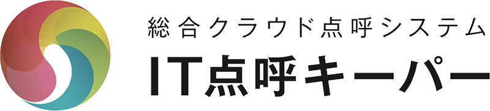
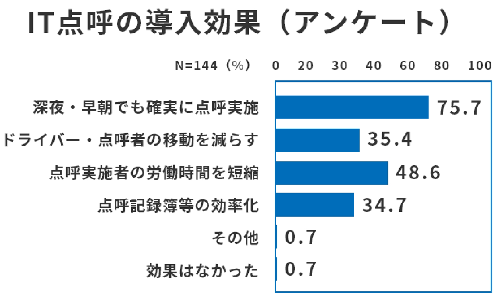
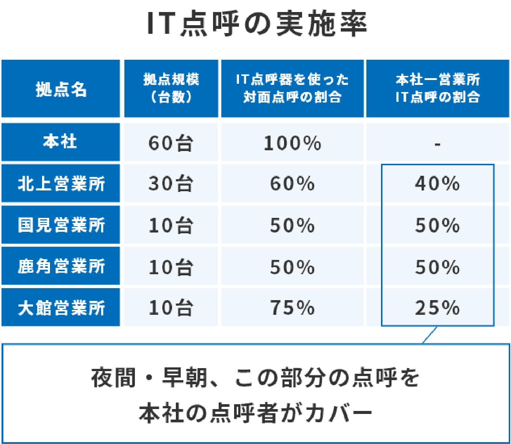
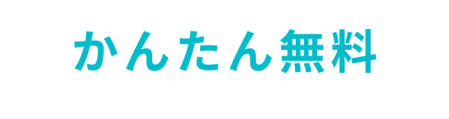

IT点呼システム
運送業務を未来へ運ぶ
点呼フルサポートシステム
・・・・・・・・・・・・
- クラウド
一括管理 - 点呼移動
不要！ - かんたん
操作

業務効率化・人的負担軽減・虚偽報告防止 など、
安心安全な運行管理を実現します。

※オプション
IT点呼キーパーはアルコール検知器・血圧計との連携可能。
測定結果の自動保存・CSVファイル出力など業務効率化をサポートする便利な機能を搭載。

※クリックで拡大します。

※クリックで拡大します。
参考：国土交通省中小トラック運送業のためのITツール活用ガイドブック
引用：テレニシ公式サイトより引用

製品の詳しいご相談・資料請求は
下記のお問い合わせ専用フォームまたはお電話にてお気軽にお問い合わせください。
受付時間：月曜日～金曜日 9:00～18:00 ※土日祝日は休業